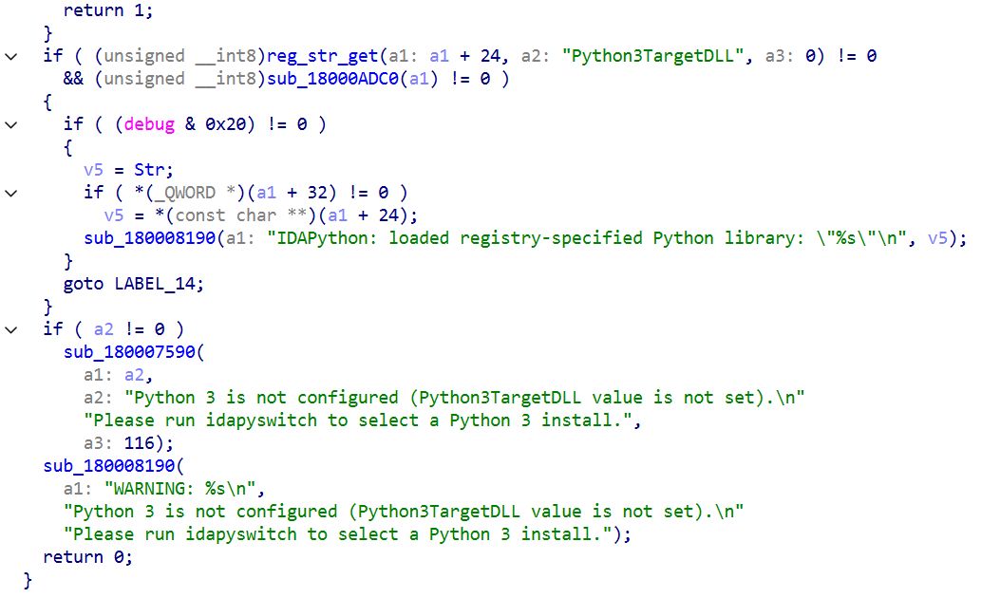
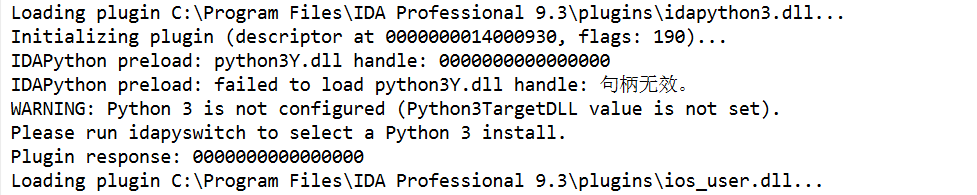
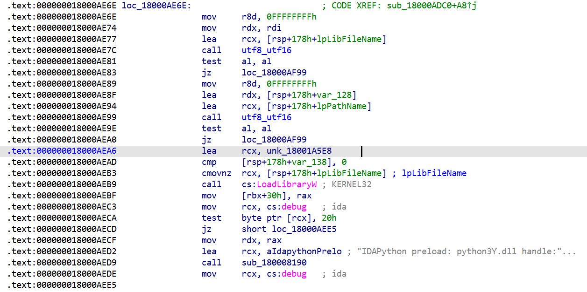
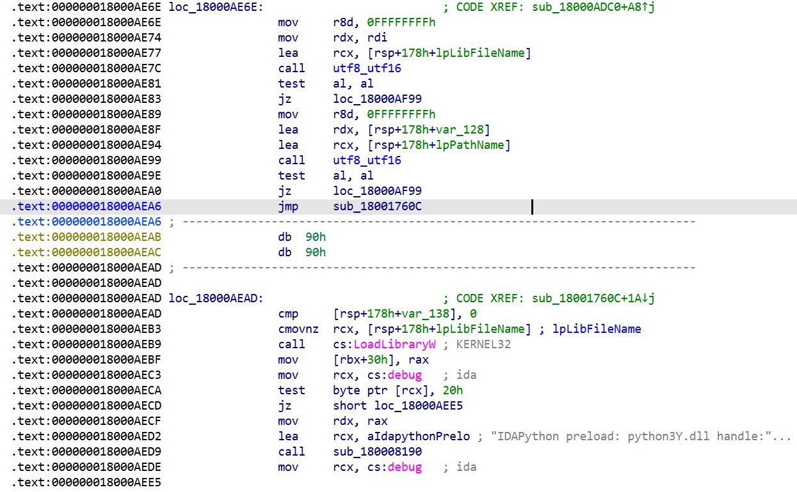
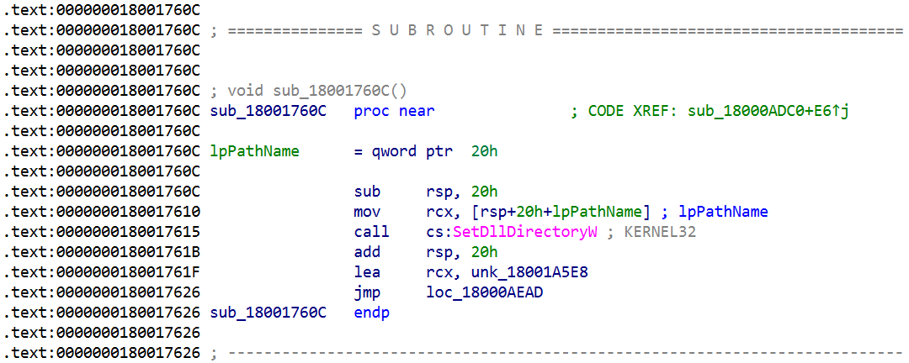

IDA Pro 9.3的IDAPython不认识conda环境,这是它的dll发生的变化.
(本文记述的事件发生于一年前,很多素材是补录的.)
何意味 在升级到最新最热的IDA Pro 9.3后,一些诡异的事情发生在了我的IDAPython上.
这个弹窗出现了,并且是两次.关掉一次还有一次.
我认为我设定的注册表路径没问题,指向一个可用的python3.dll,但是IDA Pro依然认为我没有设定它.
好,现在该开始用IDA Pro逆向IDA Pro了.
意为何 用IDA打开plugins/idapython3.dll,直接通过字符串定位到如下片段:

文本形态的伪代码
1 2 3 4 5 6 7 8 9 10 11 12 13 14 15 16 17 18 19 20 21 22 23 if ( (unsigned __int8)reg_str_get(a1: a1 + 24 , a2: "Python3TargetDLL" , a3: 0 ) != 0 && (unsigned __int8)sub_18000ADC0(a1) != 0 ) { if ( (debug & 0x20 ) != 0 ) { v5 = Str; if ( *(_QWORD *)(a1 + 32 ) != 0 ) v5 = *(const char **)(a1 + 24 ); sub_180008190(a1: "IDAPython: loaded registry-specified Python library: \"%s\"\n" , v5); } goto LABEL_14; } if ( a2 != 0 ) sub_180007590( a1: a2, a2: "Python 3 is not configured (Python3TargetDLL value is not set).\n" "Please run idapyswitch to select a Python 3 install." , a3: 116 ); sub_180008190( a1: "WARNING: %s\n" , "Python 3 is not configured (Python3TargetDLL value is not set).\n" "Please run idapyswitch to select a Python 3 install." ); return 0 ;
我们能看到这里显而易见的有两个触发弹窗的call,关于Hex-Rays程序员在想什么我暂且蒙古.
难道一个是弹窗一个是打印WARNING但是因为奇妙原因WARNING也弹窗了…不管它,继续看.
显然,sub_18000ADC0是用于加载python3.dll的,然而加载失败了也会弹Python3TargetDLL value is not set,更加令人蒙古.
这里还有一个debug,那我们就带上debug参数(-z0x20)跑一次:

文本形态的日志
1 2 3 4 5 6 7 Loading plugin C:\Program Files\IDA Professional 9.3\plugins\idapython3.dll... Initializing plugin (descriptor at 0000000010DD9880, flags: 190)... IDAPython preload: python3Y.dll handle: 0000000000000000 IDAPython preload: failed to load python3Y.dll handle: 句柄无效。 WARNING: Python 3 is not configured (Python3TargetDLL value is not set). Please run idapyswitch to select a Python 3 install. Plugin response: 0000000000000000
首先我认为加载dll不会报错句柄无效,其次我认为Hex-Rays的程序员把lastError吃掉了.
那就只能跟进sub_18000ADC0了.
为何意 sub_18000ADC0的伪代码如下.
1 2 3 4 5 6 7 8 9 10 11 12 13 14 15 16 17 18 19 20 21 22 23 24 25 26 27 28 29 30 31 32 33 34 35 36 37 38 39 40 41 42 43 44 45 46 47 48 49 50 51 52 53 54 55 56 57 58 59 60 61 62 63 64 65 66 67 68 69 70 71 72 73 74 75 76 77 78 79 80 81 82 83 84 85 86 87 88 89 90 91 92 93 94 95 96 97 98 99 100 101 102 103 104 105 106 107 108 109 110 111 112 113 114 115 char __fastcall sub_18000ADC0 (LPWSTR *a1) { const char *v2; const char *v3; const char *v4; const WCHAR *v5; HMODULE LibraryW; _BYTE *v7; DWORD DllDirectoryW; __int64 v9; unsigned __int64 v10; LPWSTR v11; DWORD v12; char v13; DWORD LastError; const char *v15; LPCWSTR lpPathName[2 ]; __int64 v18; LPCWSTR lpLibFileName; __int64 v20; __int64 v21; _BYTE v22[272 ]; v2 = Str; v3 = Str; if ( a1[4 ] != nullptr ) v3 = (const char *)a1[3 ]; if ( (unsigned __int8)qdirname(a1: v22, a2: 260 , a3: v3) != 0 ) { v4 = Str; if ( a1[4 ] != nullptr ) v4 = (const char *)a1[3 ]; if ( (unsigned __int8)qfileexist(a1: v4) != 0 && (unsigned __int8)qisdir(a1: v22) != 0 ) { lpLibFileName = nullptr; v20 = 0 ; v21 = 0 ; *(__m128i *)lpPathName = 0 ; v18 = 0 ; if ( a1[4 ] != nullptr ) v2 = (const char *)a1[3 ]; if ( (unsigned __int8)utf8_utf16(a1: &lpLibFileName, a2: v2, a3: 0xFFFFFFFFL L) == 0 || (unsigned __int8)utf8_utf16(a1: lpPathName, a2: v22, a3: 0xFFFFFFFFL L) == 0 ) { goto LABEL_31; } v5 = (const WCHAR *)&unk_18001A5E8; if ( v20 != 0 ) v5 = lpLibFileName; LibraryW = LoadLibraryW(lpLibFileName: v5); a1[6 ] = (LPWSTR)LibraryW; v7 = (_BYTE *)debug; if ( (debug & 0x20 ) != 0 ) { sub_180008190(a1: "IDAPython preload: python3Y.dll handle: %p\n" , LibraryW); v7 = (_BYTE *)debug; } if ( a1[6 ] == nullptr ) { if ( (*v7 & 0x20 ) != 0 ) { LastError = GetLastError(); v15 = (const char *)winerr(a1: LastError); sub_180008190(a1: "IDAPython preload: failed to load python3Y.dll handle: %s\n" , v15); } LABEL_31: v13 = 0 ; goto LABEL_32; } DllDirectoryW = GetDllDirectoryW(nBufferLength: 0 , lpBuffer: nullptr); if ( DllDirectoryW != 0 ) { v9 = DllDirectoryW; v10 = DllDirectoryW + 1LL ; if ( v10 <= (unsigned __int64)a1[1 ] ) { if ( (LPWSTR)v10 == a1[1 ] || v10 >= (unsigned __int64)a1[1 ] ) goto LABEL_25; } else { if ( v10 > (unsigned __int64)a1[2 ] ) *a1 = (LPWSTR)qvector_reserve(a1, a2: *a1, a3: DllDirectoryW + 1LL , a4: 2 ); memset (a1: &(*a1)[(_QWORD)a1[1 ]], Val: 0 , Size: 2 * (v10 - (_QWORD)a1[1 ])); } a1[1 ] = (LPWSTR)v10; LABEL_25: (*a1)[v9] = 0 ; v11 = a1[1 ]; v12 = (_DWORD)v11 - 1 ; if ( v11 == nullptr ) v12 = 0 ; GetDllDirectoryW(nBufferLength: v12, lpBuffer: *a1); } SetDllDirectoryW(lpPathName: lpPathName[0 ]); v13 = 1 ; LABEL_32: if ( lpPathName[0 ] != nullptr ) { lpPathName[1 ] = nullptr; qfree(); lpPathName[0 ] = nullptr; v18 = 0 ; } if ( lpLibFileName != nullptr ) { v20 = 0 ; qfree(); } return v13; } } return 0 ; }
相信学过win32api的小朋友们已经看出问题了,但是我没学过.问了一下溜溜梅 ,你就会发现这个SetDllDirectoryW怎么在LoadLibraryW后面??
windows上,dll搜索自己依赖的dll时,不会在自己所在的路径进行搜索.你不SetDllDirectoryW就直接LoadLibraryW,就会导致conda的python3.dll找不到需要的依赖,从而加载失败.
意何为 那么显然当时是没有IDA Pro 9.5给我用的,我应该如何修复这个bug从而使用最新最热IDA Pro 9.3呢?
把conda的依赖复制到system32下!
拉出去枪毙五分钟.
我们可以patch idapython3.dll,让它在LoadLibraryW前正确SetDllDirectoryW,这需要一个叫code cave的技术,也就是跳到一个原本空闲的地方,在那里塞几条指令,再跳回来.
但是这些函数之间真的很紧,几乎没地方.于是我选中了.text段的末尾.
在LoadLibraryW前选一个好位置插入向cave的jmp.

1 addr:000000018000AEA6; 48 8D 0D 3B F7 00 00 -> E9 61 C7 00 00 90 90

然后是cave,溜溜梅写的,我不懂汇编.
1 addr:000000018001760C; 一堆00 -> 48 83 EC 20 48 8B 4C 24 40 FF 15 15 0A 00 00 48 83 C4 20 48 8D 0D C2 2F 00 00 E9 82 38 FF FF
(另外,我复制这个patch没复制明白.这里有几个00我一开始没复制上.)

IDA做了一些解析,实际上就是:
1 2 3 4 5 6 .text:000000018001760C sub rsp, 20h ; 分配shadow space,保持栈对齐 .text:0000000180017610 mov rcx, [rsp+40h] ; 读取lpPathName,本来是+20h,因为shadow space所以是+40h .text:0000000180017615 call cs:SetDllDirectoryW .text:000000018001761B add rsp, 20h ; 平栈 .text:000000018001761F lea rcx, unk_18001A5E8 ; 恢复被破坏的指令 .text:0000000180017626 jmp loc_18000AEAD ; 跳回去.
保存,别忘了Apply patches to input file,弹窗消失了,idapython能用了.
合议味 在这次修复完成几个月后,IDA Pro 9.4发布了,更新日志里有一条:
idapython: detect/support pythons managed by uv/anaconda/homebrew
这个存在了高达一个小版本的bug被官方修了.
不过依旧是全网首发…?